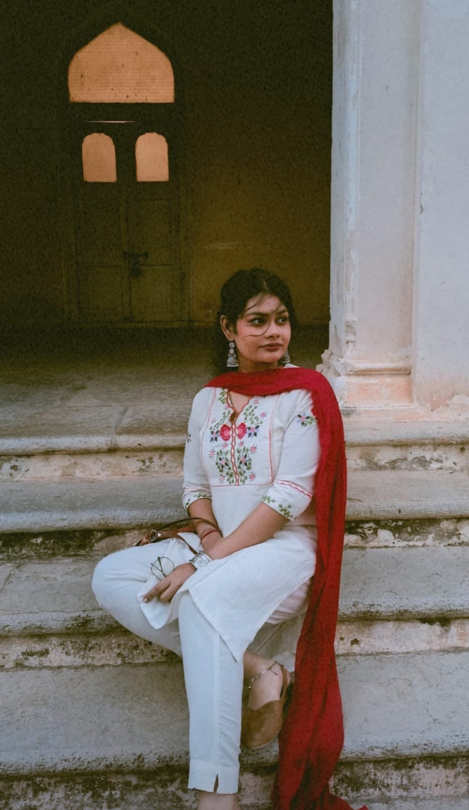
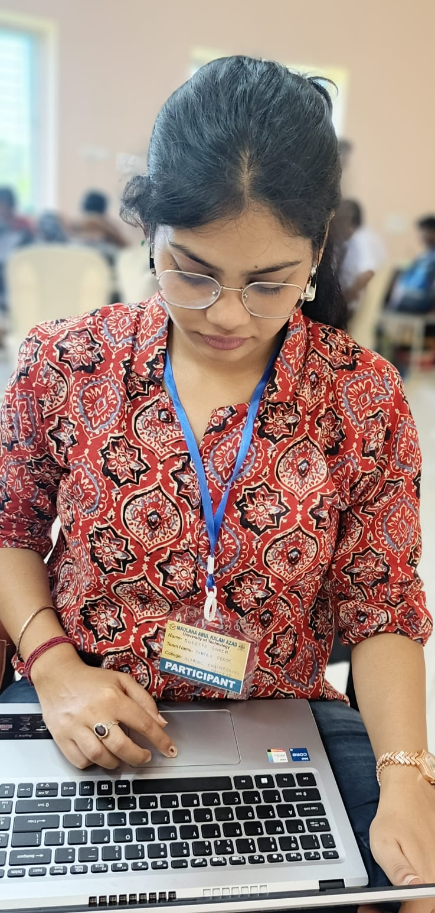
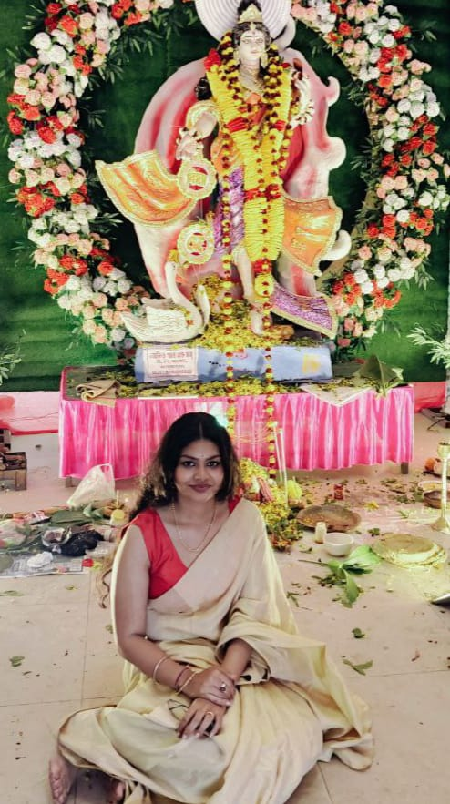

Throughout convent educated with graduation in Bachelor of Information Technology, now currently working in MNC.

"I am an open-minded, graceful, and family-oriented individual who balances modern professional ambitions with deep-rooted traditional values. Blessed with an empathetic nature, I appreciate life's simple joys, meaningful conversations, and continuous personal growth. I cherish strong family bonds and strive to create a warm, harmonious environment wherever I am."
Thank you for taking the time to view my profile. I am looking for a compatible life partner who is caring, well-educated, and shares a mutual respect for family values and personal ambitions. If our profiles align, we would love to connect and take things forward.